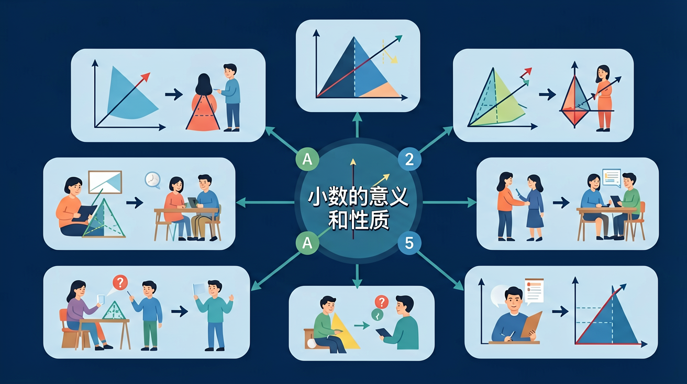

❓ 为什么0.5元和5角是一样的？
❓ 小数点和数字中间的点有什么区别？
❓ 为什么有的小数位数多有的少？
学完这一课，这些问题你都能自信地回答。
🎯 能说出小数的基本意义和组成部分
🎯 能判断小数在生活中的实际应用场景
🎯 能分析小数与分数之间的转换关系
✨ 深入理解小数，掌握小数的奥秘！

🌍 And（已知）：我们已经学会了整数和分数
⚡ But（问题）：但分数写起来比较麻烦，有没有更简便的方式？
💡 Therefore（新知）：因此我们学习小数，它是分数的另一种表达方式，计算更方便
小数是分数的另一种写法。分母是10、100、1000...的分数，都可以写成小数。
一位小数的分母是10，两位小数的分母是100，三位小数的分母是1000。
| 百位 | 十位 | 个位 | 小数点 | 十分位 | 百分位 | 千分位 |
|---|---|---|---|---|---|---|
| 1 | 2 | 3 | . | 4 | 5 | 6 |
| 100 | 10 | 1 | 0.1 | 0.01 | 0.001 |
上面的数读作：一百二十三点四五六
小数末尾添上0或去掉0，大小不变！
⚠️ 中间的0不能去掉！3.05 ≠ 3.5
相邻两个计数单位之间的进率是 10
🧪 自己试试！输入一个小数，看末尾加0是否相等：
🎯 把小数和等值分数配对！
小数点是关键，左边整数右边小；十分位百分位千分位，位置不能弄混淆
💡 常见错误往往就在细节中，仔细检查每一步！
回忆：今天学了哪些关键词和规则？试着说出来。
用自己的话解释今天学的核心概念，不看书能说清楚吗？
用今天的知识解决一个实际问题，或写一个新例子。
把今天的知识与已有知识联系起来：有什么共同点？有什么区别？能不能自己创造一道新题？